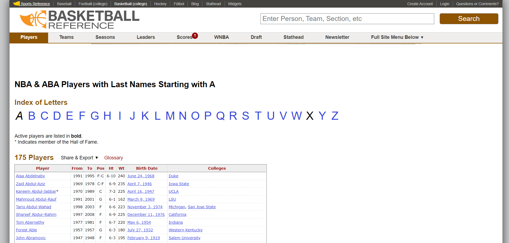
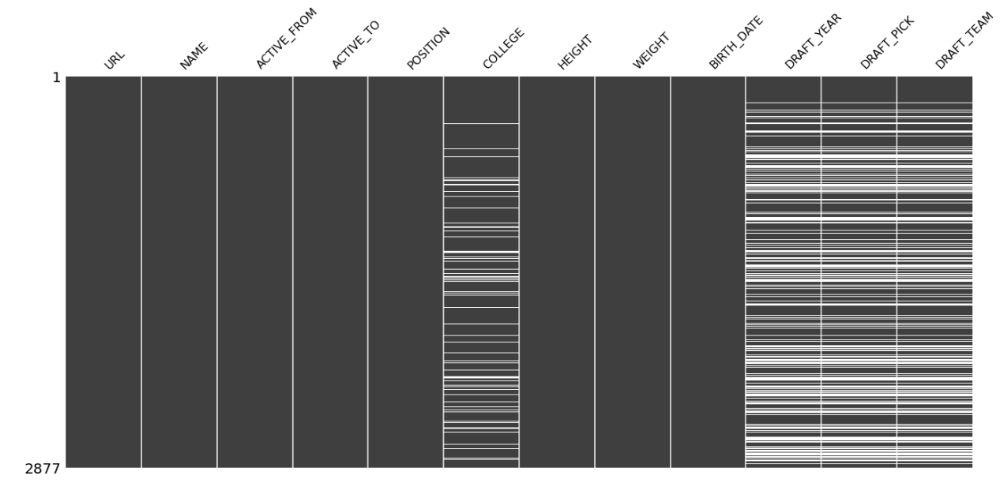
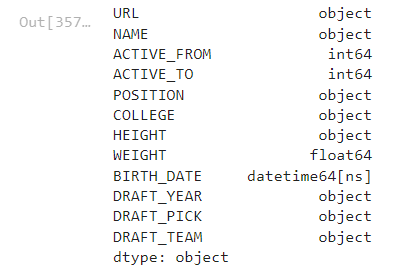
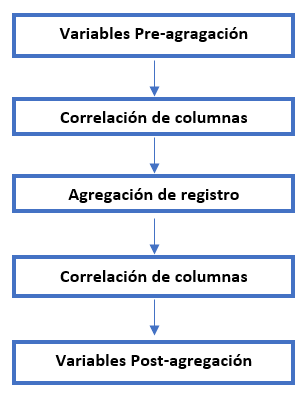
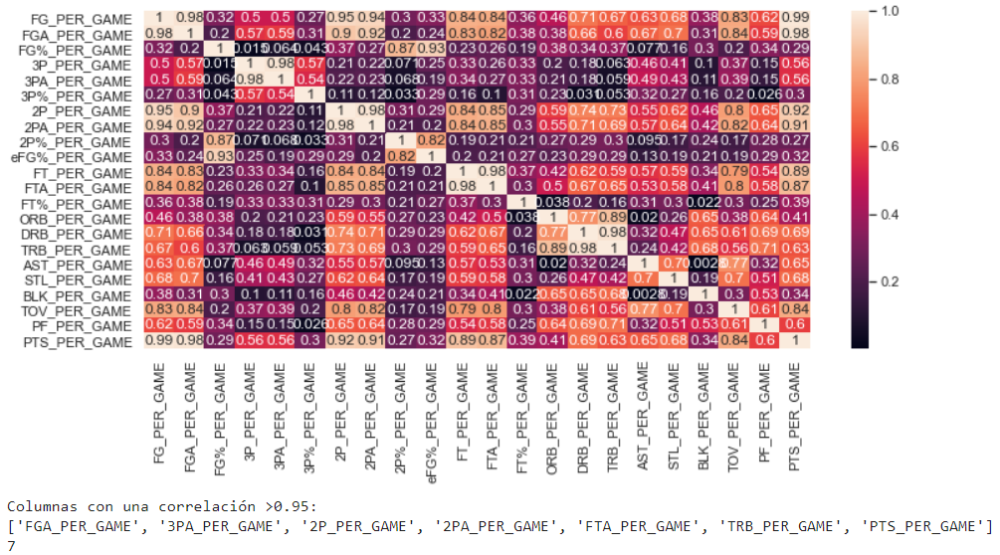
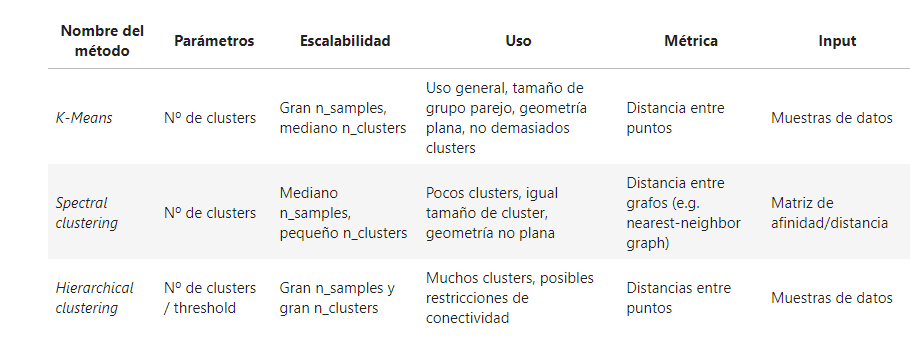
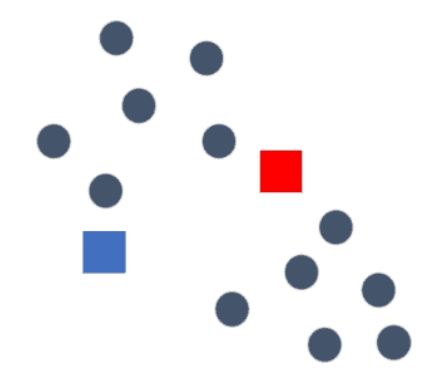
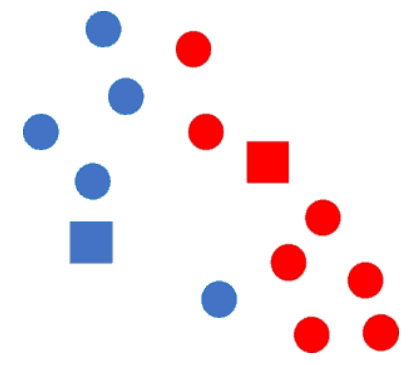
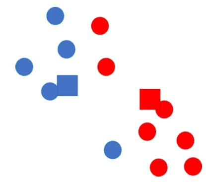
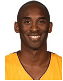

NBA CAPSTONE PROJECT
El Draft de la NBA es un procedimiento de selección de jugadores por el cual las franquicias que forman parte de la liga incorporan a sus equipos jugadores menores de 23 años procedentes de las universidades estadounidenses o de ligas de otros países.
El presente proyecto trata de desarrollar un modelo predictivo para poder clasificar a los jugadores que van a ser elegibles de cara a los futuros drafts en función de los datos históricos de los jugadores recopilados desde el año 1986. La idea es que los equipos de la NBA puedan usar nuestro proyecto para optimizar sus elecciones en las próximas ediciones del draft. Para ello, se han scrappeado las estadísticas e informaciones de todos los jugadores a partir de 1986 a través de la página web Basketball Reference y, tras un proceso de data cleaning y feature engineering, se han clusterizado los datos formando 10 grupos diferenciados de jugadores. Esta primera etapa del proyecto ha cubierto todas las fases hasta el clustering, no llegando a desarrollarse todavía el modelo predictivo
Para acceder al archivo con la explicación del significado de cada variable utilizada para el análisis de datos y algunos términos relacionados con el mundo de la NBA (conceptos básicos, descripción posiciones, etc.) pulse aquí
Data Scraping
Metodología
El Data Scraping es una técnica de programación que consiste en la extracción masiva (mediante ingeniería inversa) de datos mediante la descarga de la información subyacente en objetos que almacenan datos generalmente no estructurados (por ejemplo, en nuestro caso, datos de los archivos HTML fuente de las páginas de Basketball Reference).
En el contexto del proyecto desarrollado "Clusterización de jugadores de la NBA para posterior aproximación/predicción de la tipología de jugadores que participarán en el Draft de 22" , el apartado de Data Gathering (obtenicón de datos) se ha llevado a cabo mediante el scrapping de datos. Principalmente se han extraído (mediante librerías específicas de Phyton) estadísticas medias por temporada para cada jugador de la NBA de la página web Basketball Reference.
En referencia a la metodología utilizada, basándonos principalmente en las librerías y frameworks propuestos por Pandas y BeautifulSoup, descargamos la información de los HTML de las distintas webs y recorremos la estructura de árbol hasta capturar las tablas u objetos con los datos que sean de nuestro interés para el proyecto. A continuación, los almacenamos en DataFrames y acabamos obteniendo objetos tabulares que aglutinan toda la información que usaremos a posteriori en otros notebooks.
En las siguientes imágenes se expone un ejemplo de un data set de la página web Basketball Reference juntamente con el output del data scrapping programado para extraer las estadísticas que son de nuestro interés.

La siguiente función de Data Scrapping localiza en la página web de origen el nombre de todos los jugadores que han jugado en la NBA según el registro de la misma página y retorna un output de un objeto tabular con los nombres registrados ordenados alfabéticamente. En esta tabla encontraremos una lista de todos los jugadores que han pasado por la NBA e información básica sobre ellos: peso, altura, años en activo, posición, college y fecha de nacimiento
Una vez se han scrapeado los datos con todos los jugadores registrados en la página web original, se procede a extraer la información individual para cada jugador siguiendo la metodología del data scraping. Se han considerado las siguientes funciones:
Función que captura el objeto tabla determinado en los argumentos (según el tipo de estadística que se quiera capturar), presente en la página web del jugador del que se quiere scrapear las estadísticas NBA. Se puede decidir si se quiere obtener estadísticas medias por temporada o medias totales de carrera profesional, si son estadístcas de Regular Season o de Playoffs y si se quiere extraer las estadísticas en general o por equipo en el que haya jugado el jugador.
Función que permite recuperar información extra o específica de cada jugador que no se encuentra presente en objetos tabulares, sinó en objetos rectangulares específicos de HTML. Con esta función se quiere obtener informormación relacionada con títulos y reconocimientos idividuales (MVP, Hall-of-Fame, ROY, etc.) y colectivos (NBA Champion, Conference Champion, etc.).
Función que permite recuperar en qué equipos y en qué intervalos de tiempo los jugadores formaron parte de ciertos equipos. Los objetos con esta información no son objetos tabulares, sinó objetos rectangulares específicos de HTML.
Función que captura el objeto tabla determinado en los argumentos (según el tipo de estadística que se quiera capturar), presente en la página web del jugador del que se quiere scrapear las estadísticas de COLLEGE. Se puede decidir si se quiere obtener estadísticas medias por temporada o medias totales de carrera en college, estadísticas medias por temporada o torneo de conferencia (en caso de tenerlas) y si se quiere extraer las estadísticas en general o por equipo en el que haya jugado el jugador.
Función que permite recuperar información extra o específica de los jugadores durante su época de college y que no se encuentra presente en objetos tabulares, sinó en objetos rectangulares específicos de HTML. Con esta función se quiere obtener información relacionada con títulos y reconocimientos individuales (Big East Tourney MVP, etc.) y colectivos (NCAA Champion, Conference Champion, etc.).
Función que permite recuperar en qué equipos y en qué intervalos de tiempo los jugadores formaron parte de cada equipo durante su época college.
Función que permite obtener un DataFrame con un registro para cada jugador de la NBA draftedo con información básica sobre el Draft (número de pick, college, etc.).
Función que permite recuperar todos los equipos que han participado en la liga NBA a lo largo de la historia.
Data Cleaning
Metodología
El Data Cleaning o limpieza de datos engloba varios procesos destinados a mejorar la calidad de los datos anteriormente extarídos mediante Data Scraping. Estos procesos se utilizan para corregir o eliminar registros inexactos en una base/conjunto de datos. En general, esto significa identificar y sustituir los datos o registros incompletos, inexactos, corruptos o irrelevantes.
Tras scrapear los datos, se ha llevado a cabo un análisis para detectar las estadísticas incompletas de cada jugador registrado. Se observa una ausencia de datos en los jugadores más antiguos, dado que muchas estadísticas no existían o no se tenían en cuenta en ese intervalo de tiempo. Por ello, se decide filtrar todos los jugadores scrapeados según su inicio deportivo como profesional y tener en cuenta únicamente los datos de los jugadores activos a partir de 1986, coincidiendo con la implementación del tiro de triple puntuación.
Para llevar a cabo el proceso de detección de datos incompletos, tras clasificar todos los jugadores y sus respectivas estadísticas en un raw data, se han localizado los datos incompletos mediante la instrucción ".isnull().sum()". Este comando nos permite detectar las estadísticas vacías de cada jugador registrado en el raw data y calcular qué porcentaje de datos quedan incompletos por cada variable scrapeada. Obtenemos un dataframe de cada variable donde los datos incompletos quedan visualizados en blanco:
Existen jugadores registrados que, por ejemplo, no tienen datos de Colllege debido a que saltaron directamente a la NBA o que no fueron drafteados, jugadores que no disponen de ciertos datos debido a que tuvieron poca participiación durante una (o varias temporadas) o jugadores que no tiraron ningún triple durante una (o varias) temporadas . Estos son algunos ejemplos de los motivos que pueden justificar la ausencia de datos.
Tras filtrar los jugadores a partir del año 1986 y localizar los datos incompletos, se procede a la comprobación del tipo de variable a través de la instrucción ".dtypes()". De esta forma, podemos modificar el tipo de variable según sea conveniente para el análisis individual de cada estadística y comprobar que el tipo de datos que se usarán posteriormente para el feature engineering y la determinación de los clústers son correctos.
Una vez loccalizados los datos incompletos y el tipo de variable de estos, se procede a rellenar los vacíos de forma que pueda llevarse a cabo el posterior estudio de clustering (por ejemplo, se rellenan con "0s" los datos relacionados con lanzamiento de triples vinculados a jugadores que no han tirado desde la línea de 3 o se rellena con "undrafted" los jugadores que no fueron drafteados).
Feature Engineering
Metodología
El Feature Engineering o transformación de datos son los pasos de preprocesamiento que transforman los datos sin procesar en características que se pueden usar en algoritmos de aprendizaje automático, como por ejemplo modelos predictivos (machine learning). El proceso de Feature Engineering seguido en el presente proyecto ha seguido los 5 pasos siguientes:
En esta primera parte del proceso de transformación de datos se tiene el objetivo de simplificar el número de variables de cada jugador por temporada. Para ello, se ha llevado a cabo combinaciones de columnas (variables originales scrapeadas). Un ejemplo de la generación de este tipo de variables podría ser la suma de los puntos de 2 más los puntos de 3 de la temporada X para cada jugador.
Tras el data scraping y el data cleaning se obtienen las estadísticas por temporada, por lo que se obtienen varias filas por cada jugador scrapeado. Con el objetivo de llevar a cabo el data modelling (clustering) se requiere clasificar todas las variables de nuestro interés en una única fila por jugador. Para ello, en esta sección se decide generar variables creadas a partir de medias generales o particulares de las temporadas registradas o contajes de las mismas:
Ejemplos de variables generadas a partir de medias generales o particulares de las temporadas registradas por jugador:
- Cálculo de la media de la variable "X" a lo largo de la carrera (todas las temporadas)
- Cálculo de la media de la variable "X" de las primeras y últimas temporadas del jugador (evolución deportiva).
- Cálculo de la media de la variable "X" de las temporadas significativas del jugador.
- Cálculo de la media de la variable "X" de las temporadas que el jugador ha jugado Playoffs.
- Cálculo de la media de la variable "X" de las temporadas que el jugador ha jugado y ha ganado los Playoffs (NBA Champion).
- ...
(Se observa una única fila por jugador)
Ejemplos de variables generadas a partir de contajes de las temporadas registradas por jugador:
- Número de equipos en los que ha jugado el jugador
- Número de posiciones en las que ha jugado el jugador
- Número de temporadas que ha estado activo el jugador en la NBA
- Número de veces que el jugador ha sido campeón de la NBA
- ...
(Se observa una única fila por jugador)
Por lo tanto, entenderemos la agragación del registro como la implementación de estas variables en los raw data de forma que se obtenga una única fila de datos por jugador.
Esta parte del proceso de transformación de datos es análoga a la generación de variables de pre-agregación. En este caso se tiene el objetivo de simplificar el número de variables de cada jugador por temporada tras la agregación del registro, es decir, una vez se han simplificado los datos en una fila por cada jugador. Para ello, se ha llevado a cabo combinaciones de columnas (variables tras la agregación). Un ejemplo de la generación de este tipo de variables podría ser la suma de la media de los puntos de 2 más la media de los puntos de 3 a lo largo de la carrera deportiva de cada jugador.
El objetivo de la siguiente sección se resume en simplificar la cantidad de variables (columnas) por jugador registrado, antes y después de la agregación. Para ello se lleva a cabo un estudio de correlación para localizar las variables que se consideran dependientes y se elimina una de ellas. Se impone una condición de correlación del 95% para determinar que dos variables son dependientes:
La simplificación de estadísticas a partir de la correlación de columnas y la creación de las variables de pre-agregación y post-agregación permitirá obtener un raw data más fácil de manejar para llevar a cabo el proceso de Data Modelling (clustering).
Tras la transformación de datos llevada a cabo en el Feature Engineering y observar los tipos de variables que se obtienen se decide clasificar los jugadores registrados en 3 GOLDEN RECORDS:
- Golden Record Regular Season: Se encuentran los jugadores registrados que han participado en temporada regular pero no han jugados Playoffs.
- Golden Record Playoff: Se encuentran los jugadores que han participado en temporada regular y han accedido a los Playoffs en una o varias temporadas (teniendo participación almenos en una de ellas)
- Golden Record Ring: Se encuentran los jugadores que han participado en temporada regular, han accedido a los Playoffs y los han ganado en una o varias temporadas (teniendo participación almenos en una de ellas), proclamándose así campeones de la NBA.
Visualización
En la presente sección se ha realizado una presentación dinámica con la herramiento PowerBI para visualizar graficamente algunos de los dtaos utilizados para el proyecto. La presentación se divide en las diferentes secciones llevadas a cabo en el proyecto:
Data Modelling (clustering)
El proceso de clustering consiste en la agrupación automática de datos. Es un tipo de aprendizaje automático no-supervisado (unsupervised learning). Para el presente proyecto, una vez determinados los golden records, se lleva a cabo un estudio exhaustivo para determinar qué metodo de clustering es el más adecuado para el conjunto de datos obtenido.
En la siguiente tabla adaptada de la documentación de sklearn podemos observar los diferentes métodos de clustering estudiados para el proyecto, sus parámetros correspondientes, escalabilidad, su uso y las nociones de similitud que utilizan, así como el formato de datos de entrada necesario:
Tras el estudio llevado a cabo en el notebook Data modelling.ipynb v3 se decide utilizar el método de clustering K-Means.Es el método de clustering más común, debido a que tiene muy buena escalabilidad. El algoritmo K-Means agrupa los datos tratando de separar las muestras en n grupos de igual varianza. En otras palabras, se divide un conjunto de N muestras X en K grupos distintos C, cada uno descrito por la media de las muestras en el grupo. Las medias se denominan comúnmente centroides.
Este algoritmo tiene como objetivo elegir los centroides que minimicen un criterio conocido como inercia o suma de cuadrados dentro del clúster, concepto que puede describirse como una medida de la coherencia interna de los grupos. Los pasos que sigue el algoritmo son los siguientes:
Se elige la localización de los centroides de los K grupos aleatoriamente. En la siguiente imagen observamos los datos como círculos y los centroides como cuadrados.
A continuación, se asigna cada dato al centroide más cercano (distancia). En el ejemplo de la imagen, los cículos cambian de color para indicar a qué centroide han sido asignados.
Seguidamente se actualiza la posición del centroide a la media aritmética de las posiciones de los datos asignados a cada grupo. En la imagen se observa como cambia la posición de los centroides (cuadrados).
Los procesos de asignación y actualización se repiten iterativamente hasta que los centroides no cambian de posición. En ese momento, se da el proceso como finalizado.
Este proceso a menudo se realiza varias veces, con diferentes inicializaciones aleatórias de los centroides para comprobar la concordanza del resultado final. Un método para ayudar a solucionar este problema es el esquema de inicialización K-Means++, que se implementa en scikit-learn (usando el parámetro init="kmeans++"). Esta instrucción inicializa los centroides de forma que se encuentren (generalmente) distantes entre sí, lo que lleva a resultados probablemente mejores que la inicialización aleatória. Esto es debido a que el modelo utiliza iteraciones según la distancia de los datos con cada centroide.
Metodología
Previamente al proceso de modelling, se lleva a cabo la normalización de los datos que van a ser analizados. En este contexto, "normalizar" se refiere a que los valores de cada atributo estén en escalas similares. El proceso de clustering del método K-Means se ejecuta a partir de las distancias entre los datos, por lo que si existen atributos con escalas muy diferentes , los atributos de escala mayor dominarán las distancias.
El método escogido para hacer el clustering no es capaz de establecer la relación entre atributos de entrada y los resultados, dado que no hay resultados válidos o resultados inválidos. La responsabilidad de identificar qué atributos (variables) son relevantes recae sobre nosotros.
El método K-Means también requiere especificar el número de clústers que se quieren obtener. No es obvio, a priori, saber qué número de grupos es mejor. La idea principal del proyecto es obtener entre 8-12 clústers en total, dado que es un número adecuado para poder clasificar las características de los jugadores que compondrán cada conjunto. Un número mayor de clústers supondría una dificultad para poder diferenciar los tipos de jugadores obtenidos en cada uno. Para hacer esta elección del número K, existen varios procesos objetivos. En este caso, el método que se ha utilizado para esta elección ha sido el comúnmente conocido como el Método del codo (la intuición de este método la podemos ver explicada haciendo click en el enlace relacionado en el nombre).
Finalmente, se obtiene como resultado el siguiente número de clústers adecuado para cada Golden Record:
- Golden Record Regular Season: K=3 (tres clústers)
- Golden Record Playoff: K=4 (cuatro clústers)
- Golden Record Ring: K=3 (tres clústers)
Tras determinar el número de clústers por cada Golden Record, se procede al análisis de datos que tiene cada grupo para ser capaces de determinar una descripción particular del conjunto. De esta forma, podemos describir el perfil de jugador que se encuentra en cada clúster obtenido:
Descripción de los jugadores por clúster
Notas: Sin participación en Playoffs o Ring.
Descripción: Jugadores exteriores de rol con poco impacto y participación en la liga NBA. Muchos de ellos no han sido jugadores elegidos en el Draft. Representan el clúster más grande (20%) pero también el clúster con menos jugadores en activo. Todo y tener poco impacto en el juego, el impacto ofensivo es un 60% mayor que el impacto defensivo. Algunos jugadores de este clúster son jugadores que han ido a buscar otra oportunidades en ligas europeas.
Jugadores del clúster: Leandro Bolmaro, Omar Cook, Tyler Dorsey, etc.
Notas: Sin participación en Playoffs o Ring.
Descripción: Jugadores interiores con muy poco impacto y participación en la liga NBA. Muchos de ellos no han sido jugadores elegidos en el Draft. Representan un clúster significativamente grande pero también el clúster con menos jugadores en activo en porcentaje de grupo (7%). Son jugadores con un balance ofensivo/defensivo y que aumentan su influencia en el juego a lo largo de su carrera. Algunos jugadores de este clúster son jugadores que han ido a buscar otra oportunidades en ligas europeas.
Jugadores del clúster: Joe Arlaukas, Joe Alexander, Anthony Bennett, etc.
Notas: Sin participación en Playoffs o Ring. Presencia de algún jugador all-star
Descripción: Jugadores jóvenes interiores y exteriores, promesas de la NBA (algunos sin oportunidades). Muchos de ellos son jugadores elegidos en el Draft. Representan un clúster significativamente pequeño pero con un alto porcentaje de jugadores en activo. Muchos de ellos disminuyen su impacto a lo largo de su carrera, teniendo cada vez menos participación en la liga NBA.
Jugadores del clúster: Hermanos Ball, Zion Williamson, etc.
Notas: Sin impacto significativo en Playoffs o Ring.
Descripción: Jugadores exteriores, con un rol defensivo. Se trata de jugadores de rol defensivo con un impacto medio en su equipo. Son jugadores que no tienen mucho tiempo el balón. La estadística con mayor impacto son los rebotes.
Jugadores del clúster: Luis Scola, Manute Bol, Joakim Noah, etc.
Notas: Impacto bajo en Playoffs o Ring.
Descripción: Jugadores mayoritáriamente exteriores (aunque algunos también interiores), con un rol de rotación en equipos de Playoffs. Representan el clúster más grande. Se trata de jugadores equilibrados que juegan minutos intrascendentes en segundas rotaciones. Generalmente, no generan minutos de calidad y tienen bajos porcentajes ofensivos.
Jugadores del clúster: Juancho Hernangómez, Seth Curry, Brandon Paul, etc.
Notas: Impacto medio en Playoffs o Ring. Presencia de algun jugador All-Star.
Descripción: Jugadores mayoritáriamente exteriores (aunque algunos también interiores), con un rol de rotación, e incluso de sexto hombre, en equipos de Playoffs. Contiene el mayor número de jugadores en activo. Se trata de jugadores ofensivos que aportan minutos de calidad y tienen buenos porcentajes de ataque.
Jugadores del clúster: Álex Abrines, José Calderón, Rudy Gay, etc.
Notas: Líderes en Playoffs. Presencia de jugadores All-Star.
Descripción: Jugadores franquicia, el 25% únicamente juega en un equipo durante toda su carrera, que no han ganado ring. Tienen puestos altos en el Draft. Buenas estadísticas ofensivas y defensivas, con mucho tiempo de balón en ada jugada. Son jugadores que participan en casi todas las jugadas de su equipo mientras estan en pista.
Jugadores del clúster: Luka Doncic, Vlade Divac, Arvydas Sabonis, etc.
Notas: Líderes en Playoffs y Ring. Presencia de jugadores All-Star.
Descripción: Jugadores estrella exteriores que han sido líderes en playoffs y ring. Mayor número de rings entre todos los clústers. Son jugadores que tienen puestos altos en el Draft, con carreras largas en la NBA y candidatos firmes a Hall of Fame. Hay jugadores que destacan tanto a nivel ofensivo como defensivo, siendo jugadores muy completos en general.

Jugadores del clúster: Kobe Bryant, LeBron James, Michael Jordan, etc.
Notas: Con impacto en Playoffs y Ring. Presencia media de jugadores All-Star.
Descripción: Jugadores extranjeros que han tenido impacto en playoffs y ring en equipos líderes de la liga NBA. La mayoría de los jugadores se han ido desarrollando durante su carrera aunque algunos tienen puestos altos en el Draft. Es un clúster equilibrado entre jugadores ofensivos y defensivos. Muchos de estos jugadores de este clúster acaban su carrera en ligas europeas después de haber ganado un ring.
Jugadores del clúster: Jason Kapono, Alexis Ajinça, Nando de Colo, etc.
Notas: Líderes en Playoffs y Ring. Presencia de jugadores All-Star.
Descripción: Jugadores estrella interiores que han sido co-líderes (con almenos otra estrella, generalmente exterior) en playoffs y ring. Son jugadores que han sido líderes para sus equipos en temporadas de ring. Son jugadores con impacto defensivo.
Jugadores del clúster: Pau Gasol, Marc Gasol, David West, etc.